High is an uncalibrated class. No count, helicity, physical identities or pattern is accepted. Full explanations and overlay keys are printed beneath every image.
Report · Preserved R282 A/B/C comparisons
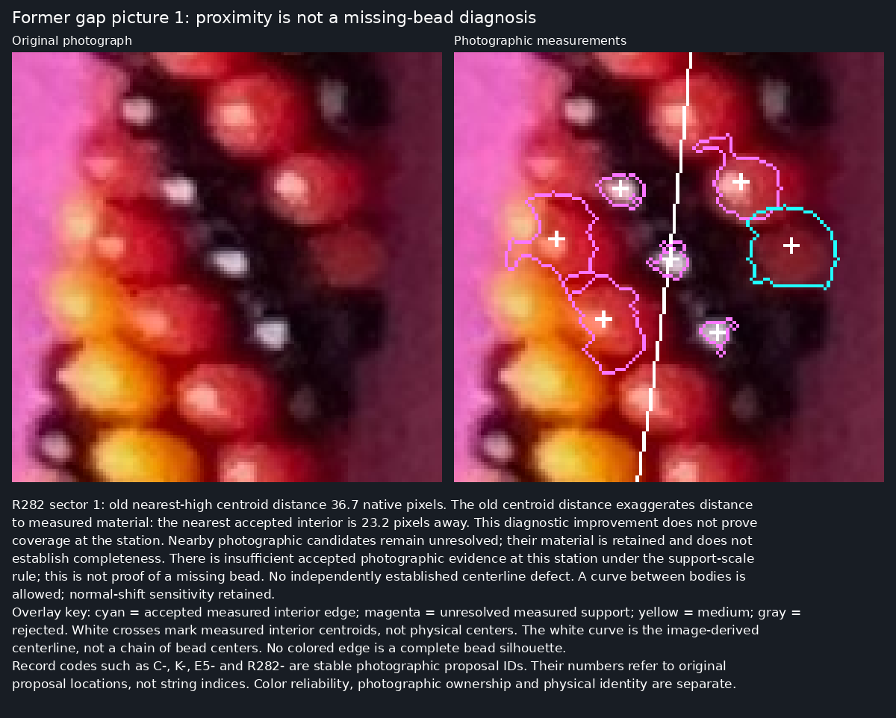
R282 sector 1: old nearest-high centroid distance 36.7 native pixels. The old centroid distance exaggerates distance to measured material: the nearest accepted interior is 23.2 pixels away. This diagnostic improvement does not prove coverage at the station. Nearby photographic candidates remain unresolved; their material is retained and does not establish completeness. There is insufficient accepted photographic evidence at this station under the support-scale rule; this is not proof of a missing bead. No independently established centerline defect. A curve between bodies is allowed; normal-shift sensitivity retained.
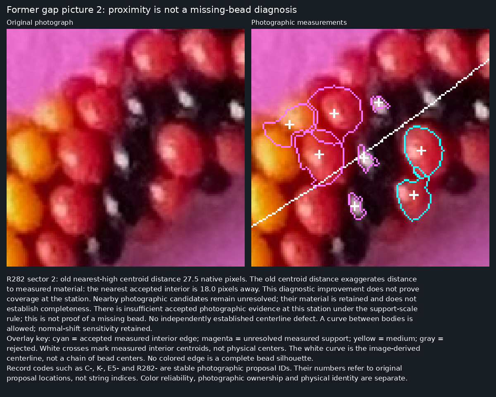
R282 sector 2: old nearest-high centroid distance 27.5 native pixels. The old centroid distance exaggerates distance to measured material: the nearest accepted interior is 18.0 pixels away. This diagnostic improvement does not prove coverage at the station. Nearby photographic candidates remain unresolved; their material is retained and does not establish completeness. There is insufficient accepted photographic evidence at this station under the support-scale rule; this is not proof of a missing bead. No independently established centerline defect. A curve between bodies is allowed; normal-shift sensitivity retained.
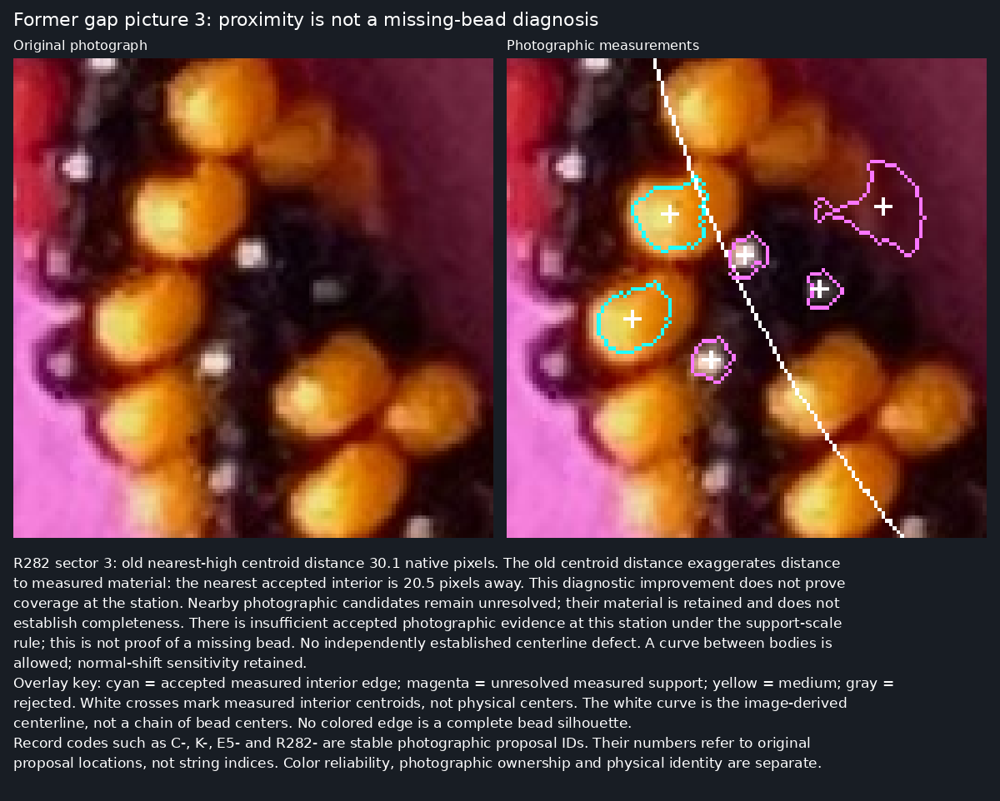
R282 sector 3: old nearest-high centroid distance 30.1 native pixels. The old centroid distance exaggerates distance to measured material: the nearest accepted interior is 20.5 pixels away. This diagnostic improvement does not prove coverage at the station. Nearby photographic candidates remain unresolved; their material is retained and does not establish completeness. There is insufficient accepted photographic evidence at this station under the support-scale rule; this is not proof of a missing bead. No independently established centerline defect. A curve between bodies is allowed; normal-shift sensitivity retained.
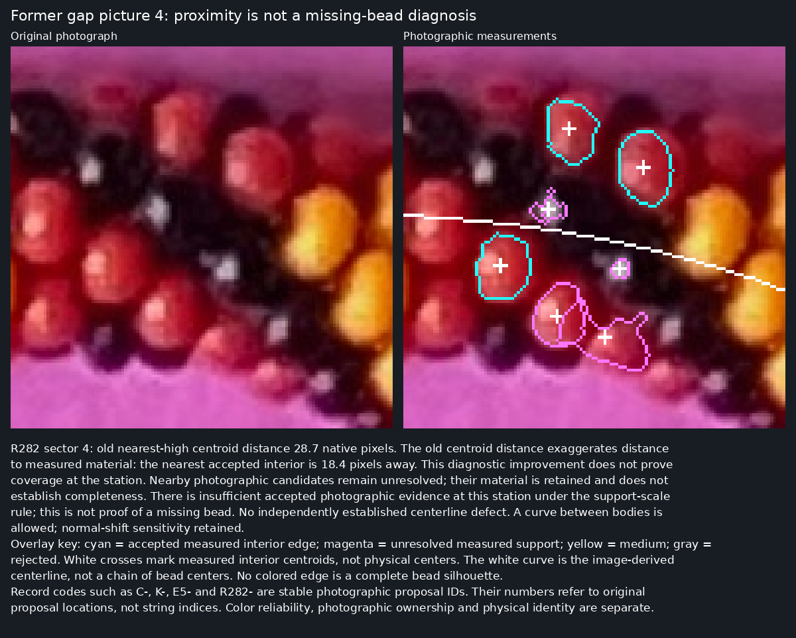
R282 sector 4: old nearest-high centroid distance 28.7 native pixels. The old centroid distance exaggerates distance to measured material: the nearest accepted interior is 18.4 pixels away. This diagnostic improvement does not prove coverage at the station. Nearby photographic candidates remain unresolved; their material is retained and does not establish completeness. There is insufficient accepted photographic evidence at this station under the support-scale rule; this is not proof of a missing bead. No independently established centerline defect. A curve between bodies is allowed; normal-shift sensitivity retained.
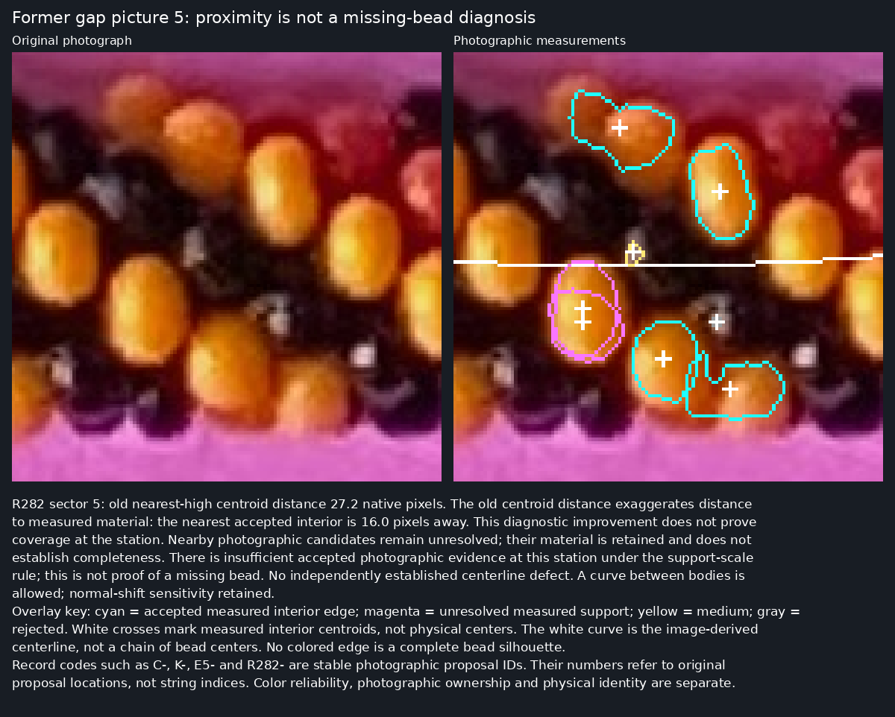
R282 sector 5: old nearest-high centroid distance 27.2 native pixels. The old centroid distance exaggerates distance to measured material: the nearest accepted interior is 16.0 pixels away. This diagnostic improvement does not prove coverage at the station. Nearby photographic candidates remain unresolved; their material is retained and does not establish completeness. There is insufficient accepted photographic evidence at this station under the support-scale rule; this is not proof of a missing bead. No independently established centerline defect. A curve between bodies is allowed; normal-shift sensitivity retained.
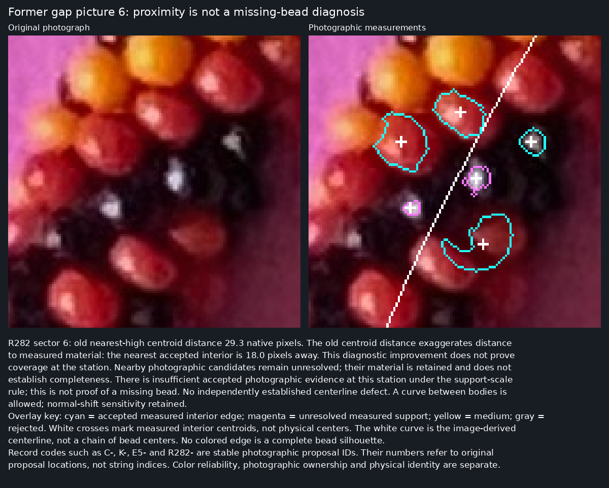
R282 sector 6: old nearest-high centroid distance 29.3 native pixels. The old centroid distance exaggerates distance to measured material: the nearest accepted interior is 18.0 pixels away. This diagnostic improvement does not prove coverage at the station. Nearby photographic candidates remain unresolved; their material is retained and does not establish completeness. There is insufficient accepted photographic evidence at this station under the support-scale rule; this is not proof of a missing bead. No independently established centerline defect. A curve between bodies is allowed; normal-shift sensitivity retained.
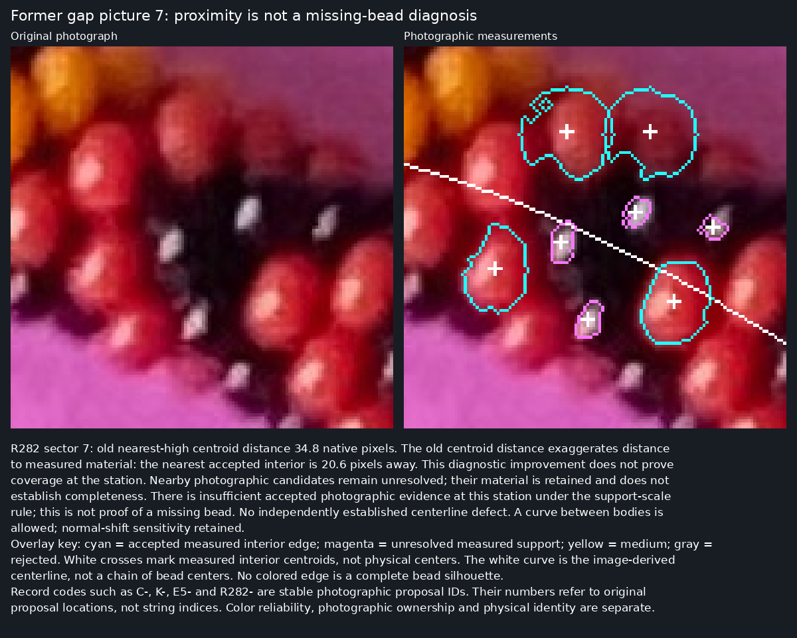
R282 sector 7: old nearest-high centroid distance 34.8 native pixels. The old centroid distance exaggerates distance to measured material: the nearest accepted interior is 20.6 pixels away. This diagnostic improvement does not prove coverage at the station. Nearby photographic candidates remain unresolved; their material is retained and does not establish completeness. There is insufficient accepted photographic evidence at this station under the support-scale rule; this is not proof of a missing bead. No independently established centerline defect. A curve between bodies is allowed; normal-shift sensitivity retained.
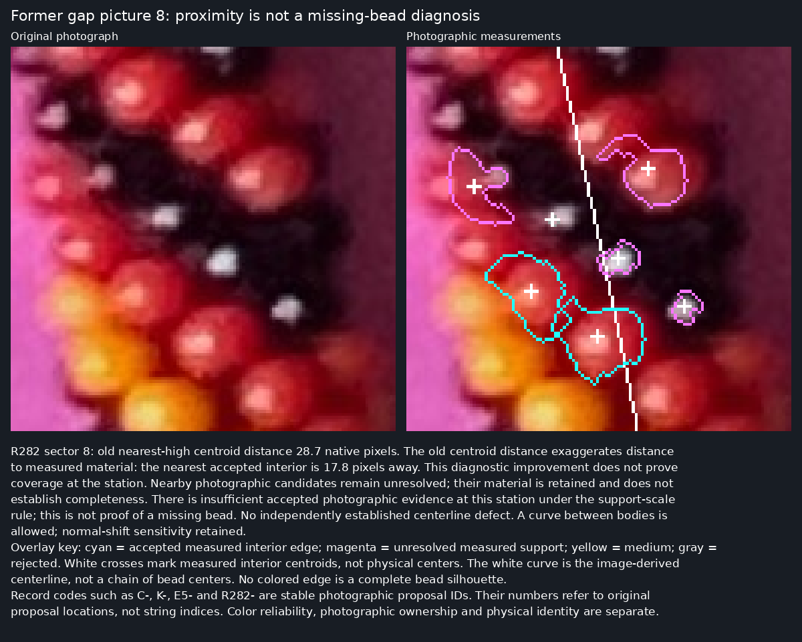
R282 sector 8: old nearest-high centroid distance 28.7 native pixels. The old centroid distance exaggerates distance to measured material: the nearest accepted interior is 17.8 pixels away. This diagnostic improvement does not prove coverage at the station. Nearby photographic candidates remain unresolved; their material is retained and does not establish completeness. There is insufficient accepted photographic evidence at this station under the support-scale rule; this is not proof of a missing bead. No independently established centerline defect. A curve between bodies is allowed; normal-shift sensitivity retained.
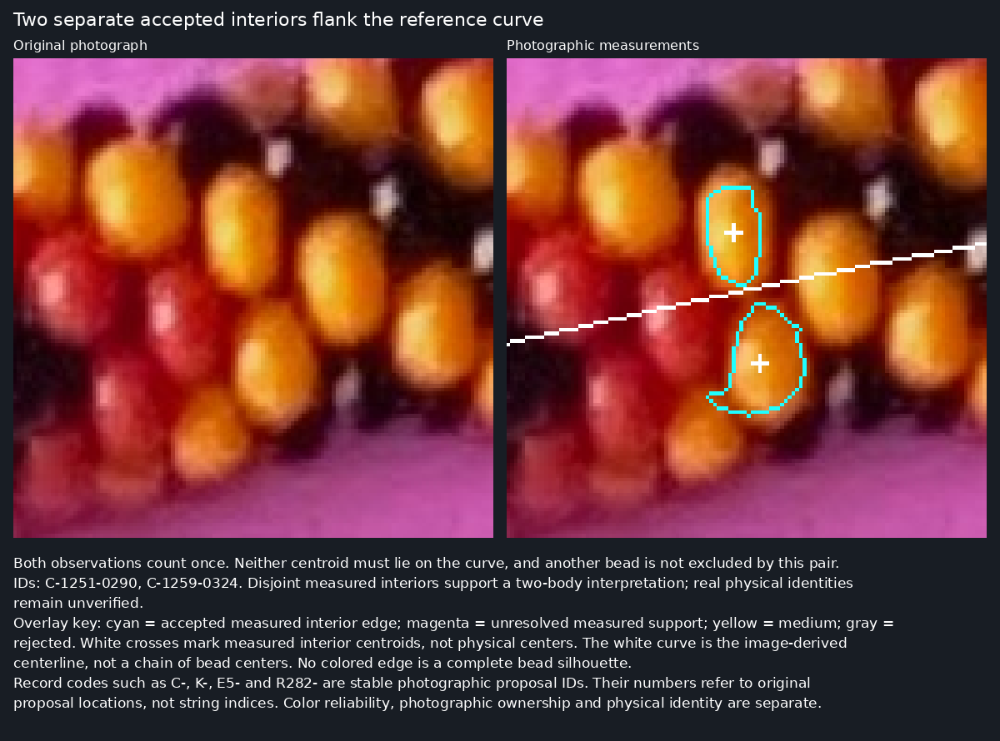
Both observations count once. Neither centroid must lie on the curve, and another bead is not excluded by this pair. IDs: C-1251-0290, C-1259-0324. Disjoint measured interiors support a two-body interpretation; real physical identities remain unverified.
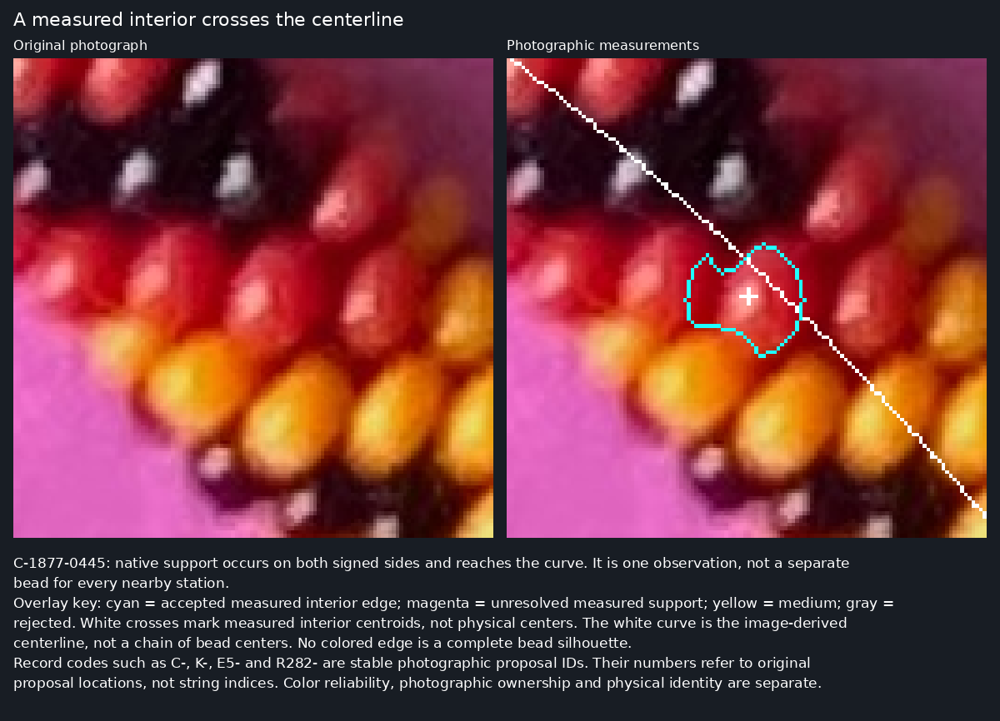
C-1877-0445: native support occurs on both signed sides and reaches the curve. It is one observation, not a separate bead for every nearby station.
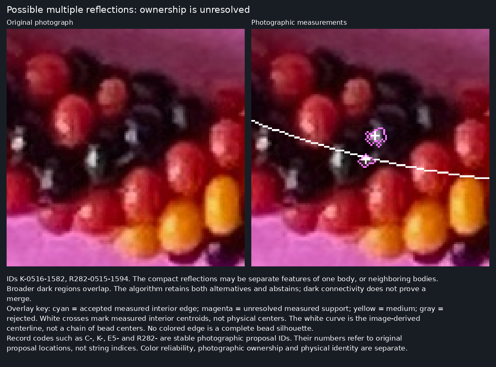
IDs K-0516-1582, R282-0515-1594. The compact reflections may be separate features of one body, or neighboring bodies. Broader dark regions overlap. The algorithm retains both alternatives and abstains; dark connectivity does not prove a merge.
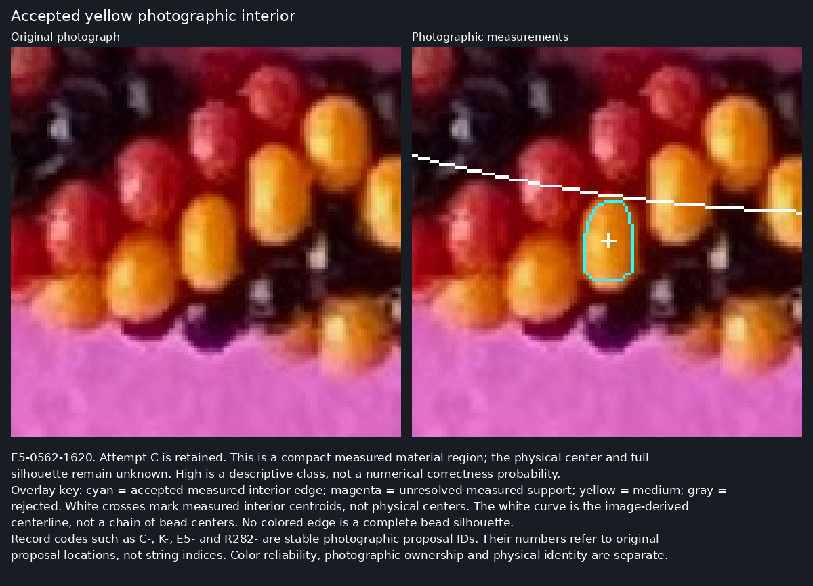
E5-0562-1620. Attempt C is retained. This is a compact measured material region; the physical center and full silhouette remain unknown. High is a descriptive class, not a numerical correctness probability.
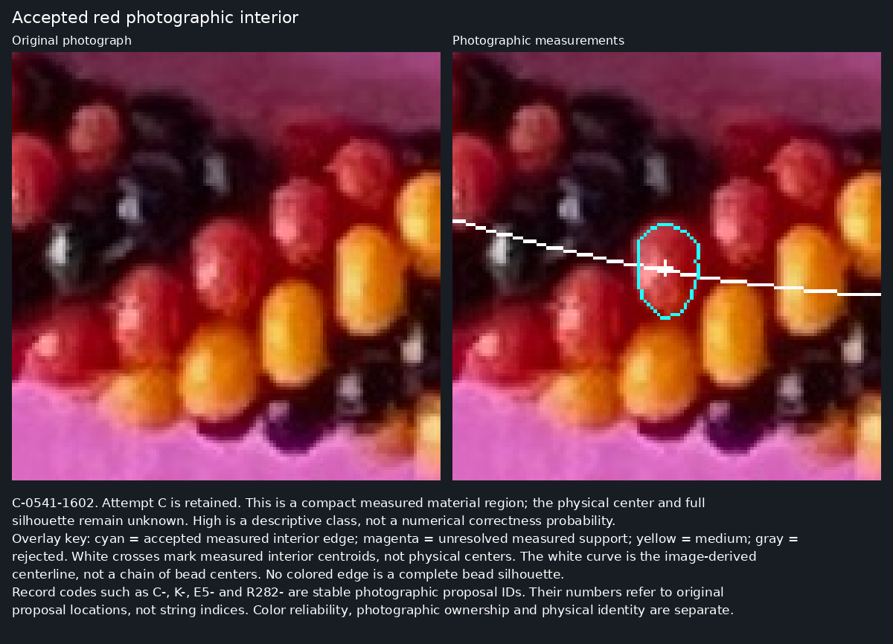
C-0541-1602. Attempt C is retained. This is a compact measured material region; the physical center and full silhouette remain unknown. High is a descriptive class, not a numerical correctness probability.
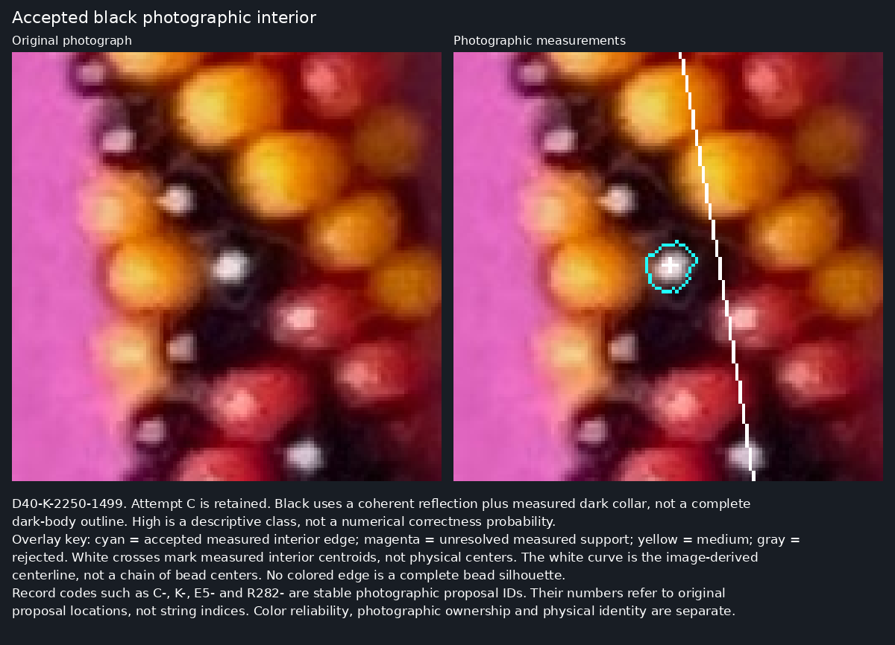
D40-K-2250-1499. Attempt C is retained. Black uses a coherent reflection plus measured dark collar, not a complete dark-body outline. High is a descriptive class, not a numerical correctness probability.
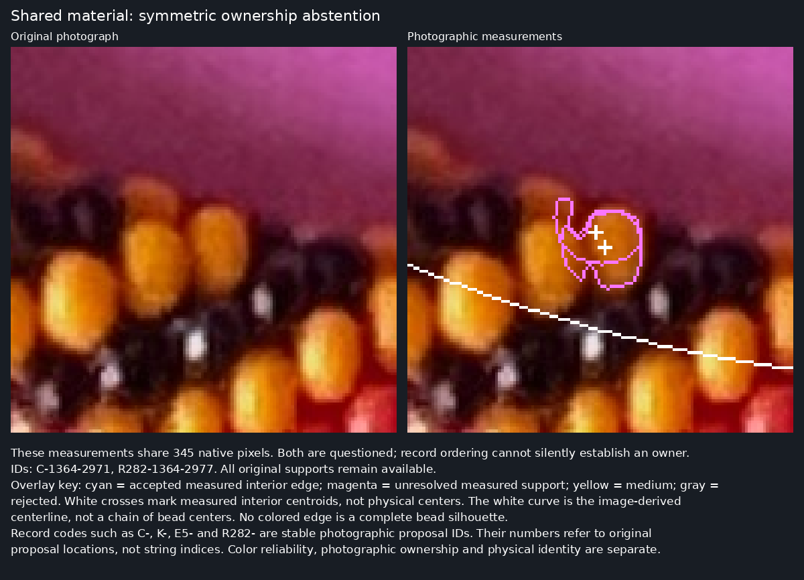
These measurements share 345 native pixels. Both are questioned; record ordering cannot silently establish an owner. IDs: C-1364-2971, R282-1364-2977. All original supports remain available.
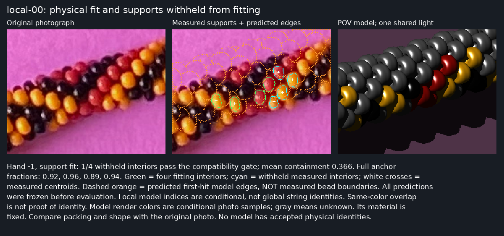
Hand -1, support fit: 1/4 withheld interiors pass the compatibility gate; mean containment 0.366. Full anchor fractions: 0.92, 0.96, 0.89, 0.94. Green = four fitting interiors; cyan = withheld measured interiors; white crosses = measured centroids. Dashed orange = predicted first-hit model edges, NOT measured bead boundaries. All predictions were frozen before evaluation. Local model indices are conditional, not global string identities. Same-color overlap is not proof of identity. Model render colors are conditional photo samples; gray means unknown. Its material is fixed. Compare packing and shape with the original photo. No model has accepted physical identities.
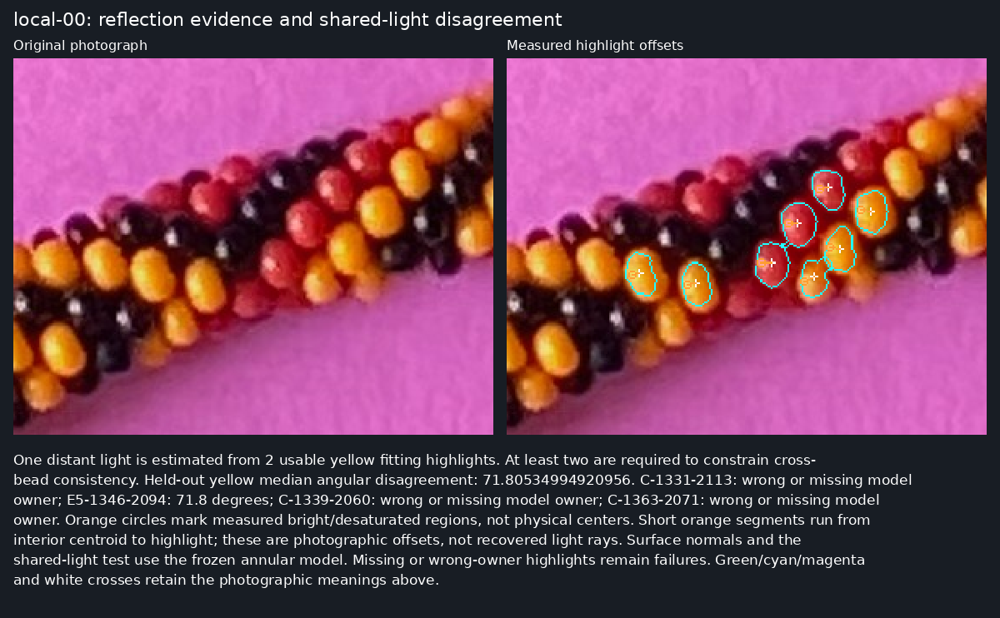
One distant light is estimated from 2 usable yellow fitting highlights. At least two are required to constrain cross-bead consistency. Held-out yellow median angular disagreement: 71.80534994920956. C-1331-2113: wrong or missing model owner; E5-1346-2094: 71.8 degrees; C-1339-2060: wrong or missing model owner; C-1363-2071: wrong or missing model owner. Orange circles mark measured bright/desaturated regions, not physical centers. Short orange segments run from interior centroid to highlight; these are photographic offsets, not recovered light rays. Surface normals and the shared-light test use the frozen annular model. Missing or wrong-owner highlights remain failures. Green/cyan/magenta and white crosses retain the photographic meanings above.
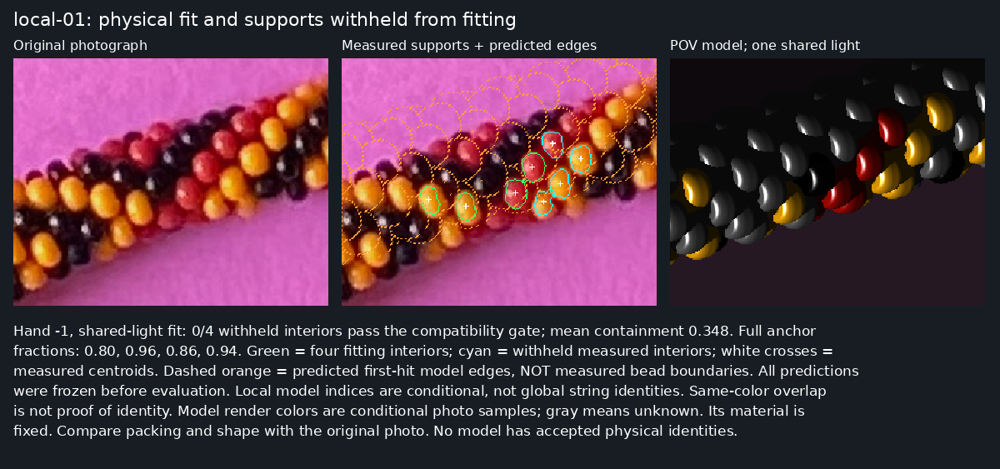
Hand -1, shared-light fit: 0/4 withheld interiors pass the compatibility gate; mean containment 0.348. Full anchor fractions: 0.80, 0.96, 0.86, 0.94. Green = four fitting interiors; cyan = withheld measured interiors; white crosses = measured centroids. Dashed orange = predicted first-hit model edges, NOT measured bead boundaries. All predictions were frozen before evaluation. Local model indices are conditional, not global string identities. Same-color overlap is not proof of identity. Model render colors are conditional photo samples; gray means unknown. Its material is fixed. Compare packing and shape with the original photo. No model has accepted physical identities.
One distant light is estimated from 2 usable yellow fitting highlights. At least two are required to constrain cross-bead consistency. Held-out yellow median angular disagreement: 32.76823668664698. C-1331-2113: wrong or missing model owner; E5-1346-2094: 32.8 degrees; C-1339-2060: wrong or missing model owner; C-1363-2071: wrong or missing model owner. Orange circles mark measured bright/desaturated regions, not physical centers. Short orange segments run from interior centroid to highlight; these are photographic offsets, not recovered light rays. Surface normals and the shared-light test use the frozen annular model. Missing or wrong-owner highlights remain failures. Green/cyan/magenta and white crosses retain the photographic meanings above.
Hand +1, support fit: 3/4 withheld interiors pass the compatibility gate; mean containment 0.680. Full anchor fractions: 1.00, 0.96, 0.98, 1.00. Green = four fitting interiors; cyan = withheld measured interiors; white crosses = measured centroids. Dashed orange = predicted first-hit model edges, NOT measured bead boundaries. All predictions were frozen before evaluation. Local model indices are conditional, not global string identities. Same-color overlap is not proof of identity. Model render colors are conditional photo samples; gray means unknown. Its material is fixed. Compare packing and shape with the original photo. No model has accepted physical identities.
One distant light is estimated from 2 usable yellow fitting highlights. At least two are required to constrain cross-bead consistency. Held-out yellow median angular disagreement: 34.19974052241359. C-1331-2113: wrong or missing model owner; E5-1346-2094: 36.6 degrees; C-1339-2060: 28.7 degrees; C-1363-2071: 31.8 degrees. Orange circles mark measured bright/desaturated regions, not physical centers. Short orange segments run from interior centroid to highlight; these are photographic offsets, not recovered light rays. Surface normals and the shared-light test use the frozen annular model. Missing or wrong-owner highlights remain failures. Green/cyan/magenta and white crosses retain the photographic meanings above.
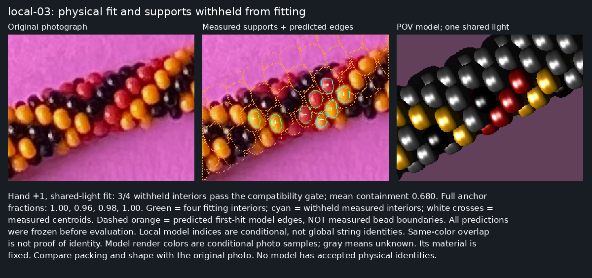
Hand +1, shared-light fit: 3/4 withheld interiors pass the compatibility gate; mean containment 0.680. Full anchor fractions: 1.00, 0.96, 0.98, 1.00. Green = four fitting interiors; cyan = withheld measured interiors; white crosses = measured centroids. Dashed orange = predicted first-hit model edges, NOT measured bead boundaries. All predictions were frozen before evaluation. Local model indices are conditional, not global string identities. Same-color overlap is not proof of identity. Model render colors are conditional photo samples; gray means unknown. Its material is fixed. Compare packing and shape with the original photo. No model has accepted physical identities.
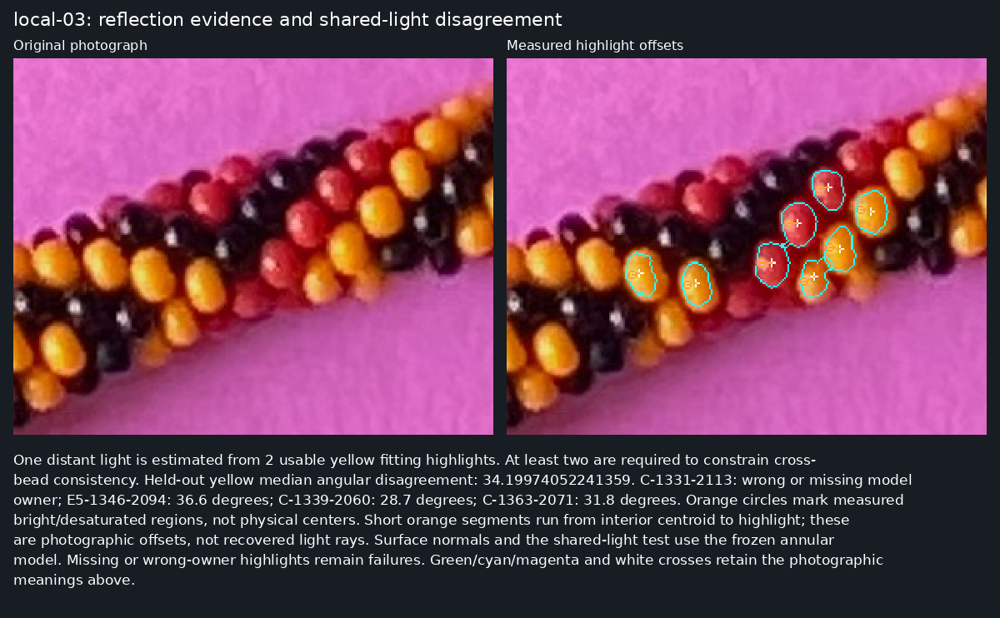
One distant light is estimated from 2 usable yellow fitting highlights. At least two are required to constrain cross-bead consistency. Held-out yellow median angular disagreement: 34.19974052241359. C-1331-2113: wrong or missing model owner; E5-1346-2094: 36.6 degrees; C-1339-2060: 28.7 degrees; C-1363-2071: 31.8 degrees. Orange circles mark measured bright/desaturated regions, not physical centers. Short orange segments run from interior centroid to highlight; these are photographic offsets, not recovered light rays. Surface normals and the shared-light test use the frozen annular model. Missing or wrong-owner highlights remain failures. Green/cyan/magenta and white crosses retain the photographic meanings above.
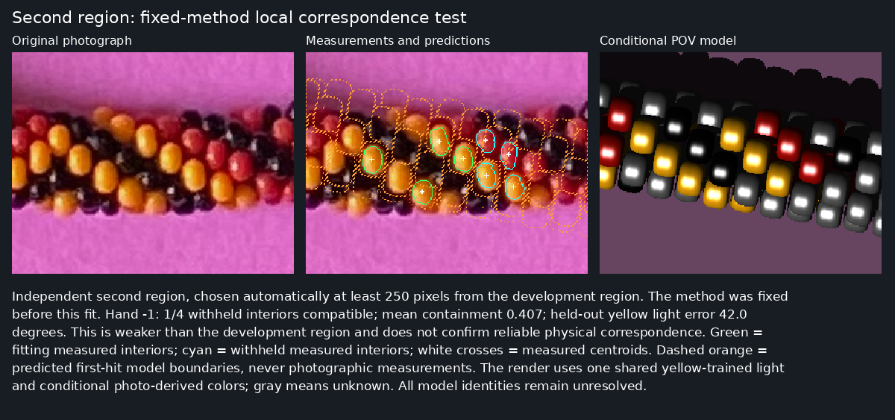
Independent second region, chosen automatically at least 250 pixels from the development region. The method was fixed before this fit. Hand -1: 1/4 withheld interiors compatible; mean containment 0.407; held-out yellow light error 42.0 degrees. This is weaker than the development region and does not confirm reliable physical correspondence. Green = fitting measured interiors; cyan = withheld measured interiors; white crosses = measured centroids. Dashed orange = predicted first-hit model boundaries, never photographic measurements. The render uses one shared yellow-trained light and conditional photo-derived colors; gray means unknown. All model identities remain unresolved.
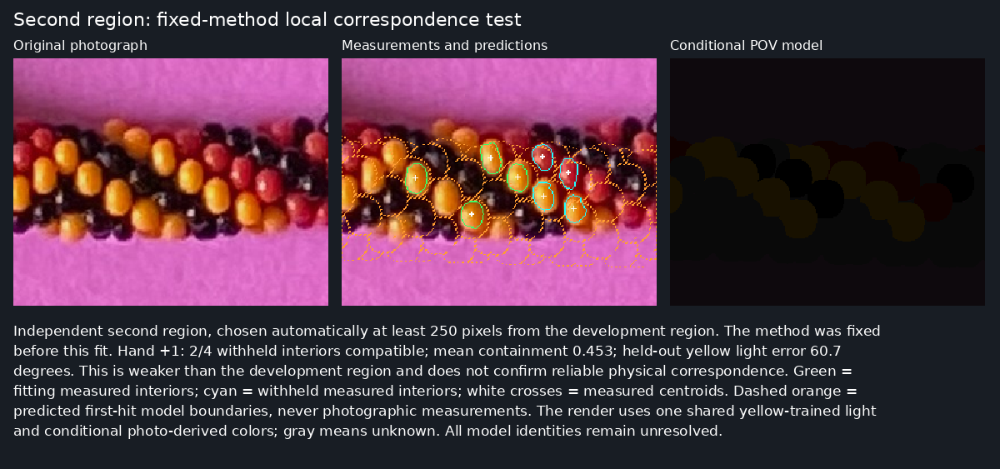
Independent second region, chosen automatically at least 250 pixels from the development region. The method was fixed before this fit. Hand +1: 2/4 withheld interiors compatible; mean containment 0.453; held-out yellow light error 60.7 degrees. This is weaker than the development region and does not confirm reliable physical correspondence. Green = fitting measured interiors; cyan = withheld measured interiors; white crosses = measured centroids. Dashed orange = predicted first-hit model boundaries, never photographic measurements. The render uses one shared yellow-trained light and conditional photo-derived colors; gray means unknown. All model identities remain unresolved.
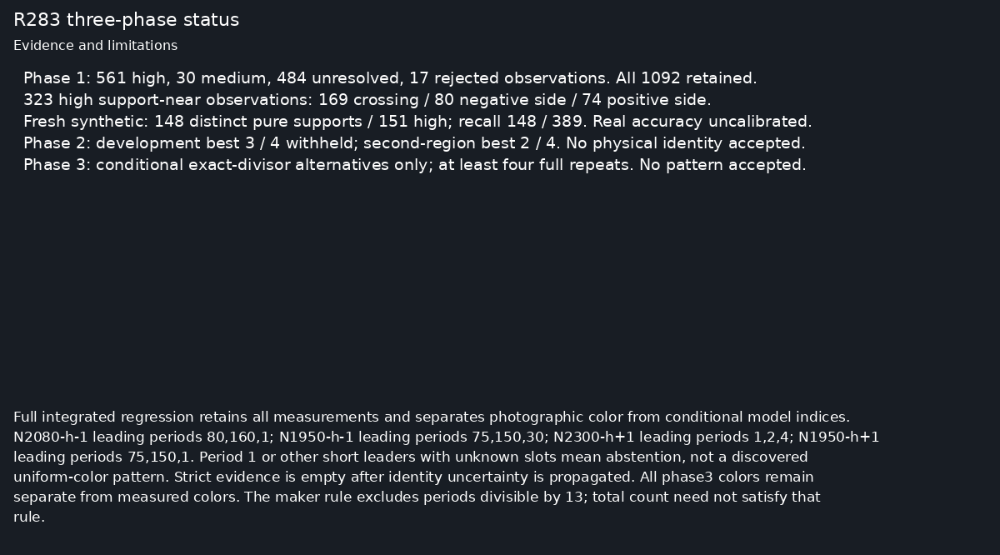
Full integrated regression retains all measurements and separates photographic color from conditional model indices. N2080-h-1 leading periods 80,160,1; N1950-h-1 leading periods 75,150,30; N2300-h+1 leading periods 1,2,4; N1950-h+1 leading periods 75,150,1. Period 1 or other short leaders with unknown slots mean abstention, not a discovered uniform-color pattern. Strict evidence is empty after identity uncertainty is propagated. All phase3 colors remain separate from measured colors. The maker rule excludes periods divisible by 13; total count need not satisfy that rule.
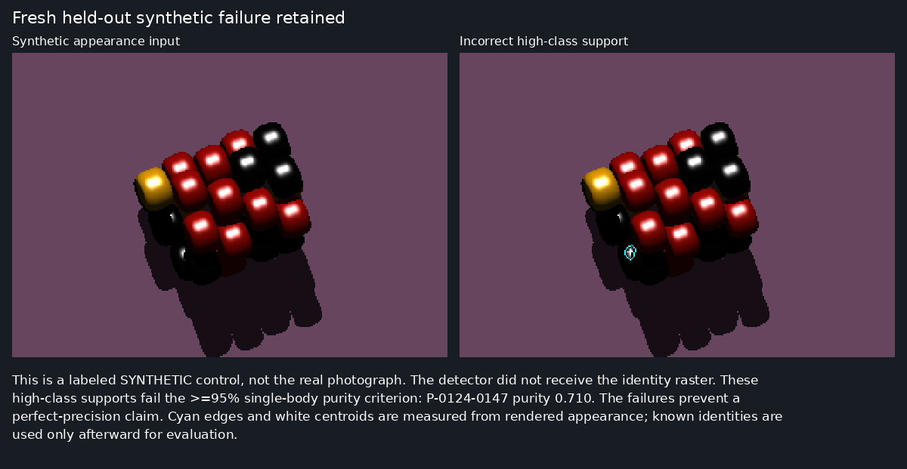
This is a labeled SYNTHETIC control, not the real photograph. The detector did not receive the identity raster. These high-class supports fail the >=95% single-body purity criterion: P-0124-0147 purity 0.710. The failures prevent a perfect-precision claim. Cyan edges and white centroids are measured from rendered appearance; known identities are used only afterward for evaluation.
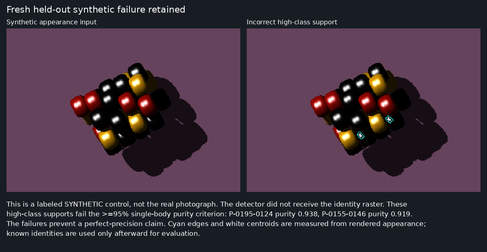
This is a labeled SYNTHETIC control, not the real photograph. The detector did not receive the identity raster. These high-class supports fail the >=95% single-body purity criterion: P-0195-0124 purity 0.938, P-0155-0146 purity 0.919. The failures prevent a perfect-precision claim. Cyan edges and white centroids are measured from rendered appearance; known identities are used only afterward for evaluation.